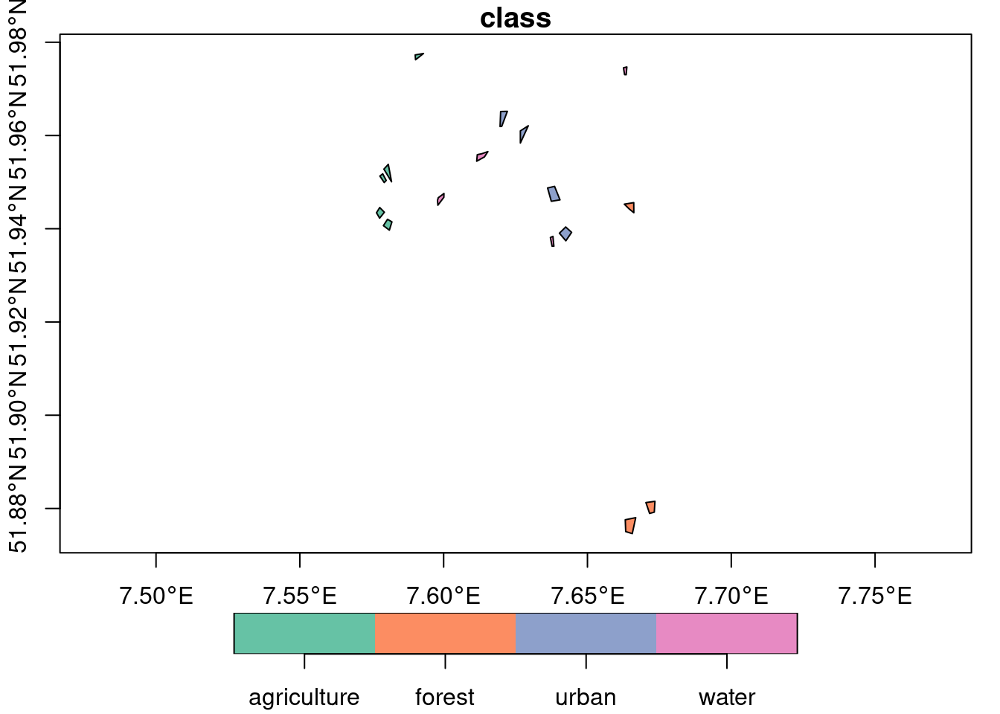
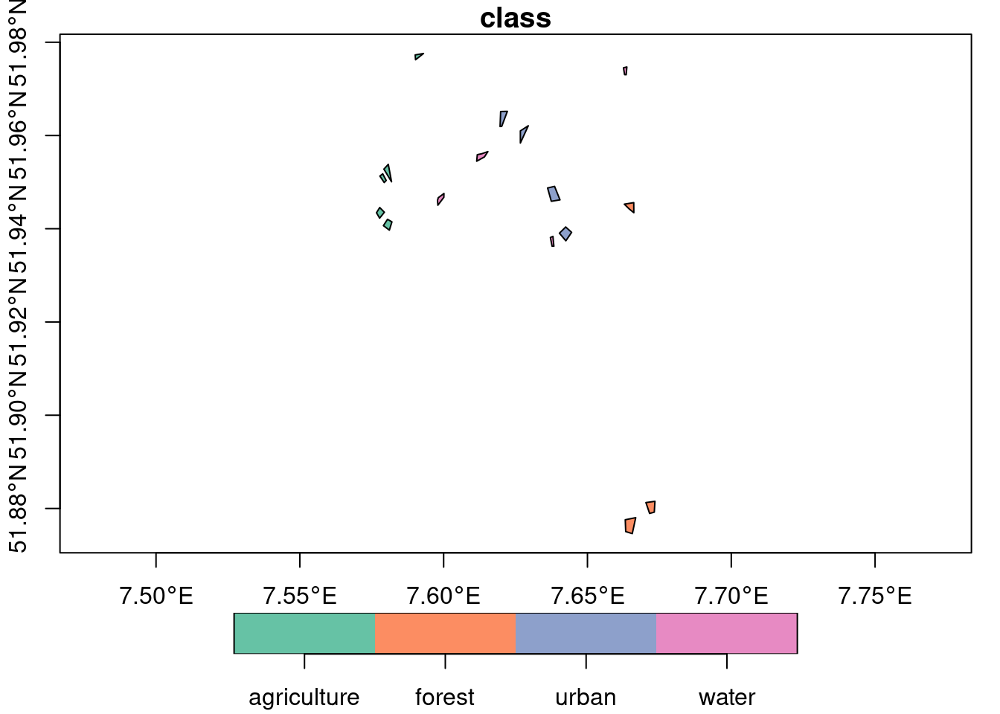
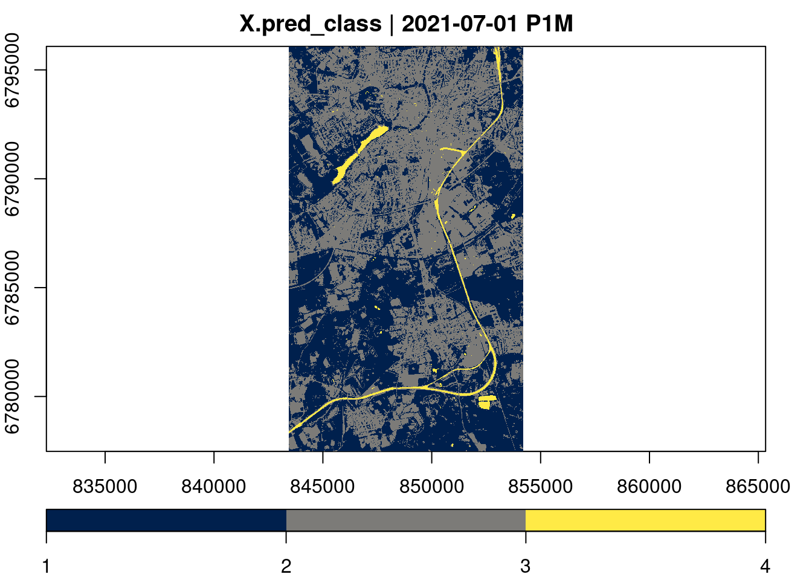
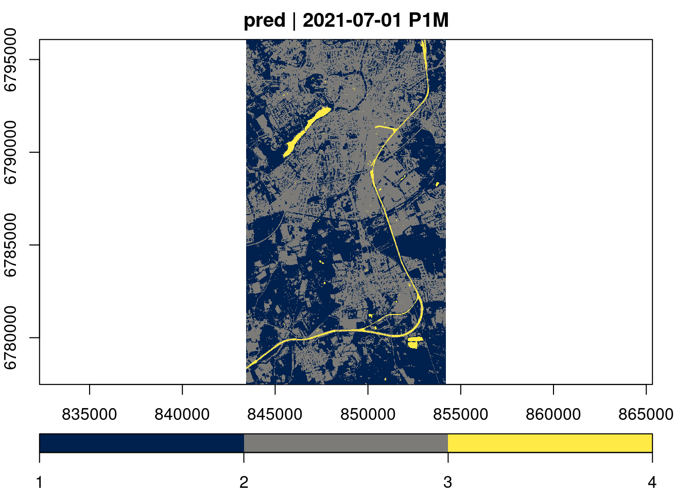

## Linking to GEOS 3.10.2, GDAL 3.4.1, PROJ 8.2.1; sf_use_s2() is TRUEtraining_sites = read_sf("https://hs-bochum.sciebo.de/s/3qna9TDZIdgFRhr/download")
plot(training_sites, axes = TRUE, key.pos = 1)
This tutorial demonstrates how data cubes can be used in a typical machine learning workflow from the extraction of training data to applying a trained model. We will start with labeled polygons, extract predictor variables from a cube, train a model, and finally apply the model to the full data cube to generate a time series of simple land cover predictions. To lower execution and data download times, the considered dataset and model are rather small.
Notice that the extraction of training data from data cubes is also covered in a separate in-depth tutorial.
predict methodIn the latest version, gdalcubes adds a predict method for data cubes. The method essentially runs a different predict method (model-specific) based on a provided model on all pixels of a data cube. However, due to the variety of different model types and differences how prediction results are returned, we will briefly discuss some important details first.
For simple predictions that take a data.frame input and yield a single vector output (e.g. predict.lm with default arguments), only the data cube and the fitted model must be provided as arguments. By default, the resulting data cube will contain a single band named “pred”. It is possible to change the name using the output_names attribute and to keep original bands with predictor variables by setting keep_bands = TRUE.
In more complex cases, the model-specific predict method may return multiple output variables such as additional standard errors, confidence intervals, class probabilities, or others. For this reason, some model-specific predict methods return a list, data.frame / tibble, matrix, or something else. For example, predict.lm returns a list when se.fit = TRUE, while the tidymodels framework generally returns a tibble.
In these cases, the output_names argument of the predict method in gdalcubes is not only used to define the variable names in the result data cube but also to specify the number of output variables and to define how variables can be extracted from the prediction output. Using predict.lm with se.fit = TRUE for instance returns a list with components fit and se.fit (see ?predict.lm). To add both to the result data cube, one must set output_names = c("fit", "se.fit"). Similarly, for tidymodels using predict.model_fit, column names such as .pred, .pred_class, or .pred_lower (see ?predict.model_fit) must be provided.
Notice that additional arguments provided to the predict method in gdalcubes, such as type = prob, are automatically passed to the underlying model-specific predict method.
The following sections illustrate these details in a practical example, where we predict land cover on Sentinel-2 data with a Random Forest classifier. This includes the following steps:
Creating a data cube with predictor variables from Sentinel-2 data on Amazon web services (AWS)
Extracting predictor variables from the data cube at provided polygons, and combining land cover labels from polygons with predictor variables to create a training dataset.
Training a random forest model
Using the model to predict land cover on a Sentinel-2 data cube
Since the focus of this tutorial is not the model training (step 3), this part is simplified as much as possible. Tihs typically involves hyperparameter optimization, data splitting, model validation, and preprocessing. For details, how this can be done for specific models, please refer to the corresponding package documentation (e.g. here for tidymodels).
As a first step, we need to download our labeled polygons.
## Linking to GEOS 3.10.2, GDAL 3.4.1, PROJ 8.2.1; sf_use_s2() is TRUEtraining_sites = read_sf("https://hs-bochum.sciebo.de/s/3qna9TDZIdgFRhr/download")
plot(training_sites, axes = TRUE, key.pos = 1)
The dataset contains polygons and labels for land cover classes “agriculture”, “forest”, “urban”, “water”. As our area of interest, we use the extent of the polygon dataset and look for (cloud-free) Sentinel-2 images in July, 2021. To find corresponding images on AWS, we use the rstac package and query from the Sentinel-2 cloud-optimized GeoTIFF collection.
## xmin ymin xmax ymax
## 7.576647 51.874603 7.673467 51.977592library(rstac)
s = stac("https://earth-search.aws.element84.com/v0")
items = s |>
stac_search(collections = "sentinel-s2-l2a-cogs",
bbox = c(bbox["xmin"],bbox["ymin"],
bbox["xmax"],bbox["ymax"]),
datetime = "2021-07-01/2021-07-31") |>
post_request() |> items_fetch(progress = FALSE)
length(items$features)## [1] 26To filter by cloud coverage and create a gdalcubes image collection object, we apply stac_image_collection() on the resulting list of 26 images.
library(gdalcubes)
s2_collection = stac_image_collection(items$features, property_filter = function(x) {x[["eo:cloud_cover"]] < 20})
s2_collection## Image collection object, referencing 5 images with 21 bands
## Images:
## name left top bottom right
## 1 S2B_32ULC_20210723_0_L2A 6.946499 52.34304 51.34525 7.704564
## 2 S2B_32UMC_20210723_0_L2A 7.531544 52.35038 51.35444 9.143276
## 3 S2A_32ULC_20210718_0_L2A 6.952812 52.34304 51.34536 7.704564
## 4 S2A_32UMC_20210718_0_L2A 7.531544 52.35038 51.35444 9.143276
## 5 S2B_32ULC_20210703_0_L2A 6.948221 52.34304 51.34528 7.704564
## datetime srs
## 1 2021-07-23T10:36:40 EPSG:32632
## 2 2021-07-23T10:36:36 EPSG:32632
## 3 2021-07-18T10:36:41 EPSG:32632
## 4 2021-07-18T10:36:37 EPSG:32632
## 5 2021-07-03T10:36:39 EPSG:32632
##
## Bands:
## name offset scale unit nodata image_count
## 1 AOT 0 1 5
## 2 B01 0 1 5
## 3 B02 0 1 5
## 4 B03 0 1 5
## 5 B04 0 1 5
## 6 B05 0 1 5
## 7 B06 0 1 5
## 8 B07 0 1 5
## 9 B08 0 1 5
## 10 B09 0 1 5
## 11 B11 0 1 5
## 12 B12 0 1 5
## 13 B8A 0 1 5
## 14 SCL 0 1 5
## 15 WVP 0 1 5
## 16 overview:B02 0 1 5
## 17 overview:B03 0 1 5
## 18 overview:B04 0 1 5
## 19 visual:B02 0 1 5
## 20 visual:B03 0 1 5
## 21 visual:B04 0 1 5Now, we need to think about which bands to use as predictor variables. Here, we simple use the visible and NIR bands, and additionally calculate the normalized difference vegetation index (NDVI) If the coordinates and/or time of pixels should be used as predictor variables, these can be added similarly to the data cube (see ?apply_pixel.cube).
v = cube_view(extent=s2_collection, dt="P1M", dx=10, dy=10, srs="EPSG:3857",
aggregation = "median", resampling = "bilinear")
ms_cube <- raster_cube(s2_collection, v) |> # no mask
select_bands(c("B02","B03","B04","B08")) |>
apply_pixel("(B08-B04)/(B08+B04)", "NDVI", keep_bands = TRUE)
ms_cube## A data cube proxy object
##
## Dimensions:
## low high count pixel_size chunk_size
## t 2021-07-01 2021-07-31 1 P1M 1
## y 6682590.54960759 6863730.54960759 18114 10 1024
## x 773277.779989172 1017827.77998917 24455 10 1024
##
## Bands:
## name offset scale nodata unit
## 1 B02 0 1 NaN
## 2 B03 0 1 NaN
## 3 B04 0 1 NaN
## 4 B08 0 1 NaN
## 5 NDVI 0 1 NaNTo extract values from the data cube at our polygons, we use the extract_geom() function (see separate tutorial for details). We directly combine the extracted values with the land cover labels und drop the geometry column, which is not needed for model fitting
gdalcubes_options(parallel = 8)
x = extract_geom(ms_cube, training_sites, merge = TRUE, drop_geom = TRUE)
nrow(x)## [1] 12744## class time B02 B03 B04 B08 NDVI
## 1 water 2021-07-01 278.1733 388.4746 218.7955 223.0656 0.009663814
## 2 water 2021-07-01 275.6416 389.9560 215.7977 227.9578 0.027402564
## 3 water 2021-07-01 264.9102 411.6023 226.3572 254.1946 0.057928064
## 4 water 2021-07-01 264.1580 407.9504 224.6645 256.8592 0.066860009
## 5 water 2021-07-01 261.1796 409.7808 224.2396 264.0295 0.081491630
## 6 water 2021-07-01 262.5545 406.2611 223.9684 263.6427 0.081364730The result is a data frame with columns for the label (output variable) and predictor variables (“B02”,“B03”,“B04”,“B08”, “NDVI”).
tidymodels
Below, we use the data.frame to train a simple random forest model. For classification, we have to make sure that the character land cover labels are converted to a categorical variable (factor), before.
## ── Attaching packages ────────────────────────────────────── tidymodels 1.1.1 ──## ✔ broom 1.0.5 ✔ recipes 1.0.9
## ✔ dials 1.2.0 ✔ rsample 1.2.0
## ✔ dplyr 1.1.3 ✔ tibble 3.2.1
## ✔ ggplot2 3.4.4 ✔ tidyr 1.3.0
## ✔ infer 1.0.5 ✔ tune 1.1.2
## ✔ modeldata 1.3.0 ✔ workflows 1.1.3
## ✔ parsnip 1.1.1 ✔ workflowsets 1.0.1
## ✔ purrr 1.0.2 ✔ yardstick 1.3.0## ── Conflicts ───────────────────────────────────────── tidymodels_conflicts() ──
## ✖ purrr::discard() masks scales::discard()
## ✖ dplyr::filter() masks stats::filter()
## ✖ dplyr::lag() masks stats::lag()
## ✖ recipes::step() masks stats::step()
## • Use suppressPackageStartupMessages() to eliminate package startup messagesNotice that in real modeling applications, one would of course split the data into training, validation, and testing sets and/or apply cross validation. Since this is well documented for individual packages and this is not specific to data cubes, we skip this part here.
The fitted model rf_model_fitted can be used to calculate predictions for any pixels of the original data cube. The code below first creates a new data cube with all predictor variables. Since we will reuse this cube a couple of times, we explicitly write it to a temporary netCDF file on disk and store the path in a variable ncfile. This can sometimes be helpful, because downloading the data can slow down the process if we work locally and do not directly work within AWS. Afterwards, we load the cube from disk using ncdf_cube() and apply the prediction. From the tidymodels documentation we can see that using type = "class" will yield a tibble object (a data.frame) with column .pred_class. Notice that the resulting predictions are numeric. The bookkeeping about factor levels is up to the user.
AOI = st_bbox(st_transform(training_sites, "EPSG:3857"))
v = cube_view(v, extent=list(left=AOI["xmin"],right=AOI["xmax"], top = AOI["ymax"], bottom = AOI["ymin"]),
dx = 10, dy = 10)
raster_cube(s2_collection, v) |> # no mask
select_bands(c("B02","B03","B04","B08")) |>
apply_pixel("(B08-B04)/(B08+B04)", "NDVI", keep_bands = TRUE) |>
write_ncdf() -> ncfile
ncdf_cube(ncfile) |>
predict(rf_model_fitted, output_names=".pred_class", type="class") |>
plot(key.pos = 1, col=viridis::cividis, nbreaks=4)
If we are instead interested in the probabilities for individual classes, we can set type = "prob" and provide 4 column names (one for each class) as output_names argument.
caret
The caret package is another widely-used framework for applying machine learning model. The script below shows how to train a model and calculate predictions for all pixels similar to the previous example. Notice that in contrast to tidymodels, the predict method from caret here returns a simple vector of predictions.
## Loading required package: lattice##
## Attaching package: 'caret'## The following objects are masked from 'package:yardstick':
##
## precision, recall, sensitivity, specificity## The following object is masked from 'package:purrr':
##
## liftsamples = createDataPartition(y = x$class, p = .75, list = FALSE)
training = x[samples,]
testing = x[-samples,]
head(training)## class time B02 B03 B04 B08 NDVI
## 2 water 2021-07-01 275.6416 389.9560 215.7977 227.9578 0.02740256
## 4 water 2021-07-01 264.1580 407.9504 224.6645 256.8592 0.06686001
## 6 water 2021-07-01 262.5545 406.2611 223.9684 263.6427 0.08136473
## 7 water 2021-07-01 266.9449 399.1490 225.9979 258.5306 0.06714294
## 9 water 2021-07-01 264.7381 400.6535 216.5559 241.5511 0.05456203
## 10 water 2021-07-01 266.2553 398.0927 213.3050 242.7066 0.06447573tc <- trainControl(method = "cv",number = 5)
m = train(class ~ B02 + B03 + B04 + B08 + NDVI, data = training, method = "rf", trControl = tc)
m## Random Forest
##
## 9560 samples
## 5 predictor
## 4 classes: 'agriculture', 'forest', 'urban', 'water'
##
## No pre-processing
## Resampling: Cross-Validated (5 fold)
## Summary of sample sizes: 7649, 7648, 7648, 7647, 7648
## Resampling results across tuning parameters:
##
## mtry Accuracy Kappa
## 2 0.9958157 0.9942130
## 3 0.9950834 0.9931999
## 5 0.9930960 0.9904503
##
## Accuracy was used to select the optimal model using the largest value.
## The final value used for the model was mtry = 2.
The predict method in gdalcubes has been designed to work with most common model types (e.g. from tidymodels, caret, as well as simple lm or glm models). However, there might be cases, where it is not possible to use it e.g., when model-specific predict method return more complex nested structures, like a list of matrices. As an alternative approach (with different pitfalls), it is possible to convert a complete data cube to a data.frame using as.data.frame() and directly apply the model-specific predict method on it. This, however, may only work for smaller data cubes and requires some additional effort to convert the prediction results to images / data cubes.
# Model prediction on data cubes
```{r}
#| include: false
knitr::opts_chunk$set(comment = "##")
#knitr::opts_chunk$set(echo = TRUE)
#knitr::opts_chunk$set(cache = TRUE)
#knitr::opts_chunk$set(out.width = "65%")
#knitr::opts_chunk$set(fig.align = "center")
```
## Introduction
This tutorial demonstrates how data cubes can be used in a typical machine learning workflow from the extraction of training data to applying a trained model. We will start with labeled polygons, extract predictor variables from a cube, train a model, and finally apply the model to the full data cube to generate a time series of simple land cover predictions. To lower execution and data download times, the considered dataset and model are rather small.
_Notice that the extraction of training data from data cubes is also covered in a [separate in-depth tutorial](../vignettes/gc03_ML_training_data.Rmd)._
## The `predict` method
In the latest version, `gdalcubes` adds a `predict` method for data cubes. The method essentially runs a different `predict` method (_model-specific_) based on a provided model on all pixels of a data cube. However, due to the variety of different model types and differences how prediction results are returned, we will briefly discuss some important details first.
For simple predictions that take a `data.frame` input and yield a single vector output (e.g. `predict.lm` with default arguments), only the data cube and the fitted model must be provided as arguments. By default, the resulting data cube will contain a single band named "pred". It is possible to change the name using the `output_names` attribute and to keep original bands with predictor variables by setting `keep_bands = TRUE`.
In more complex cases, the _model-specific_ predict method may return multiple output variables such as additional standard errors, confidence intervals, class probabilities, or others. For this reason, some model-specific `predict` methods return a `list`, `data.frame` / `tibble`, `matrix`, or something else. For example, `predict.lm` returns a list when `se.fit = TRUE`, while the `tidymodels` framework generally returns a `tibble`.
In these cases, the `output_names` argument of the `predict` method in gdalcubes is not only used to define the variable names in the result data cube but also to specify the number of output variables and to define how variables can be extracted from the prediction output. Using `predict.lm` with `se.fit = TRUE` for instance returns a list with components `fit` and `se.fit` (see `?predict.lm`). To add both to the result data cube, one must set `output_names = c("fit", "se.fit")`. Similarly, for `tidymodels` using `predict.model_fit`, column names such as `.pred`, `.pred_class`, or `.pred_lower` (see `?predict.model_fit`) must be provided.
Notice that additional arguments provided to the `predict` method in gdalcubes, such as `type = prob`, are automatically passed to the underlying _model-specific_ `predict` method.
## Modeling workflow
The following sections illustrate these details in a practical example, where we predict land cover on Sentinel-2 data with a Random Forest classifier. This includes the following steps:
1. Creating a data cube with predictor variables from Sentinel-2 data on Amazon web services (AWS)
2. Extracting predictor variables from the data cube at provided polygons, and combining land cover labels from polygons with predictor variables to create a training dataset.
3. Training a random forest model
4. Using the model to predict land cover on a Sentinel-2 data cube
Since the focus of this tutorial is not the model training (step 3), this part is simplified as much as possible.
Tihs typically involves hyperparameter optimization, data splitting, model validation, and preprocessing. For details, how this can be done for specific models, please refer to the corresponding package documentation (e.g. [here for tidymodels](https://www.tidymodels.org/start/)).
## Creation of a training dataset
As a first step, we need to download our labeled polygons.
```{r training_sites, fig.align='center'}
library(sf)
training_sites = read_sf("https://hs-bochum.sciebo.de/s/3qna9TDZIdgFRhr/download")
plot(training_sites, axes = TRUE, key.pos = 1)
```
The dataset contains polygons and labels for land cover classes "agriculture", "forest", "urban", "water".
As our area of interest, we use the extent of the polygon dataset and look for (cloud-free) Sentinel-2 images in July, 2021. To find corresponding images on AWS, we use the [`rstac` package](https://cran.r-project.org/package=rstac) and query from the Sentinel-2 cloud-optimized GeoTIFF collection.
```{r stac}
bbox = st_bbox(training_sites)
bbox
library(rstac)
s = stac("https://earth-search.aws.element84.com/v0")
items = s |>
stac_search(collections = "sentinel-s2-l2a-cogs",
bbox = c(bbox["xmin"],bbox["ymin"],
bbox["xmax"],bbox["ymax"]),
datetime = "2021-07-01/2021-07-31") |>
post_request() |> items_fetch(progress = FALSE)
length(items$features)
```
To filter by cloud coverage and create a gdalcubes image collection object, we apply `stac_image_collection()` on the resulting list of 26 images.
```{r}
library(gdalcubes)
s2_collection = stac_image_collection(items$features, property_filter = function(x) {x[["eo:cloud_cover"]] < 20})
s2_collection
```
Now, we need to think about which bands to use as predictor variables. Here, we simple use the visible and NIR bands, and additionally calculate the normalized difference vegetation index (NDVI) If the coordinates and/or time of pixels should be used as predictor variables, these can be added similarly to the data cube (see `?apply_pixel.cube`).
```{r mscube}
v = cube_view(extent=s2_collection, dt="P1M", dx=10, dy=10, srs="EPSG:3857",
aggregation = "median", resampling = "bilinear")
ms_cube <- raster_cube(s2_collection, v) |> # no mask
select_bands(c("B02","B03","B04","B08")) |>
apply_pixel("(B08-B04)/(B08+B04)", "NDVI", keep_bands = TRUE)
ms_cube
```
To extract values from the data cube at our polygons, we use the `extract_geom()` function ([see separate tutorial](../vignettes/gc03_ML_training_data.Rmd) for details). We directly combine the extracted values with the land cover labels und drop the geometry column, which is not needed for model fitting
```{r extract}
gdalcubes_options(parallel = 8)
x = extract_geom(ms_cube, training_sites, merge = TRUE, drop_geom = TRUE)
nrow(x)
head(x)
```
The result is a data frame with columns for the label (output variable) and predictor variables ("B02","B03","B04","B08", "NDVI").
## Training and prediction with `tidymodels`
Below, we use the `data.frame` to train a simple random forest model. For classification, we have to make sure that the
character land cover labels are converted to a categorical variable (`factor`), before.
```{r model_fitting}
library(tidymodels)
x$class = as.factor(x$class) # convert to factor
rf_model_fitted = rand_forest(trees = 100, mode = "classification") |>
set_engine("ranger") |>
fit(class ~ B02 + B03 + B04 + B08 + NDVI, data = x)
```
Notice that in real modeling applications, one would of course split the data into training, validation, and testing sets and/or apply cross validation. Since this is well documented for individual packages and this is not specific to data cubes, we skip this part here.
The fitted model `rf_model_fitted` can be used to calculate predictions for any pixels of the original data cube. The code below first creates a new data cube with all predictor variables. Since we will reuse this cube a couple of times, we explicitly write it to a temporary netCDF file on disk and store the path in a variable `ncfile`. This can sometimes be helpful, because downloading the data can slow down the process if we work locally and do not directly work within AWS. Afterwards, we load the cube from disk using `ncdf_cube()` and apply the prediction. From the `tidymodels` documentation we can see that using `type = "class"` will yield a `tibble` object (a `data.frame`) with column `.pred_class`. Notice that the resulting predictions are numeric. The bookkeeping about factor levels is up to the user.
```{r predict_tidymodels}
AOI = st_bbox(st_transform(training_sites, "EPSG:3857"))
v = cube_view(v, extent=list(left=AOI["xmin"],right=AOI["xmax"], top = AOI["ymax"], bottom = AOI["ymin"]),
dx = 10, dy = 10)
raster_cube(s2_collection, v) |> # no mask
select_bands(c("B02","B03","B04","B08")) |>
apply_pixel("(B08-B04)/(B08+B04)", "NDVI", keep_bands = TRUE) |>
write_ncdf() -> ncfile
ncdf_cube(ncfile) |>
predict(rf_model_fitted, output_names=".pred_class", type="class") |>
plot(key.pos = 1, col=viridis::cividis, nbreaks=4)
```
If we are instead interested in the probabilities for individual classes, we can set `type = "prob"` and provide 4 column names (one for each class) as `output_names` argument.
```{r predict_tidymodels_classprobs}
out_names = paste0(".pred_",levels(x$class))
ncdf_cube(ncfile) |>
predict(rf_model_fitted, output_names=out_names, type="prob") |>
plot(key.pos = 1, col=viridis::cividis)
```
## Predict again, but now with `caret`
The `caret` package is another widely-used framework for applying machine learning model. The script below
shows how to train a model and calculate predictions for all pixels similar to the previous example.
Notice that in contrast to `tidymodels`, the predict method from `caret` here returns a simple vector of predictions.
```{r caret}
library(caret)
samples = createDataPartition(y = x$class, p = .75, list = FALSE)
training = x[samples,]
testing = x[-samples,]
head(training)
tc <- trainControl(method = "cv",number = 5)
m = train(class ~ B02 + B03 + B04 + B08 + NDVI, data = training, method = "rf", trControl = tc)
m
ncdf_cube(ncfile) |>
predict(m) |>
plot(key.pos = 1, col=viridis::cividis, nbreaks=4)
```
## More complex cases
The `predict` method in gdalcubes has been designed to work with most common model types (e.g. from `tidymodels`, `caret`, as well as simple `lm` or `glm` models). However, there might be cases, where it is not possible to use it e.g., when model-specific `predict` method return more complex nested structures, like a list of matrices. As an alternative approach (with different pitfalls), it is possible to convert a complete data cube to a `data.frame` using `as.data.frame()` and directly apply the model-specific predict method on it. This, however, may only work for smaller data cubes and requires some additional effort to convert the prediction results to images / data cubes.